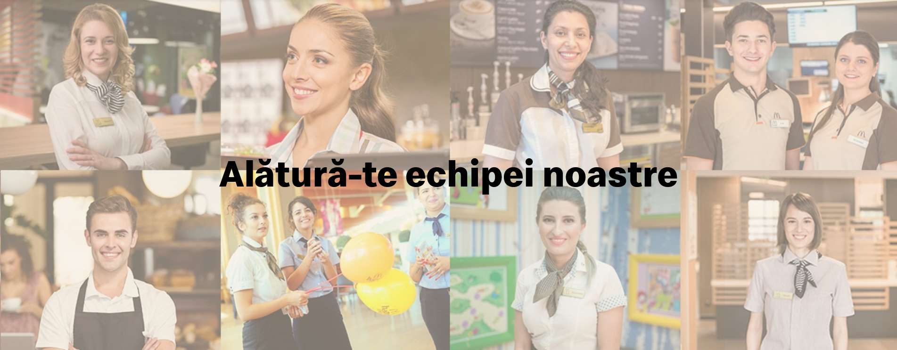

Misiunea noastră, la McDonald’s, este aceea de a fi mereu restaurantul preferat al clienţilor noştri.
McDonald’s este cel mai mare lanţ de restaurante cu servire rapidă din lume, cu peste 32.000 de restaurante care servesc zilnic peste 60 de milioane de oameni în peste 100 de ţări.
Echipa McDonald’s e formată din oameni muncitori, ambițioși, pentru care interacțiunea cu alți oameni este o bucurie. În fiecare zi, angajații McDonald’s întâmpină peste 220.000 de clienți.
Ne dorim să aducem în echipa noastră colegi dornici să învețe și să crească în cadrul unei echipe puternice și ambițioase.
McDonald’s a deschis primul restaurant în România pe 16 iunie 1995, în Unirea Shopping Center din București. A fost primul pas în construirea unei povești de succes, care se dezvoltă în fiecare an.
În 2016, McDonald’s în România a devenit Premier Restaurants România, ca urmare a parteneriatului pentru dezvoltare încheiat cu Premier Capital, compania malteză care coordonează operațiunile McDonald’s din șase țări europene: Estonia, Grecia, Letonia, Lituania, Malta și România.
Astăzi, McDonald’s are peste 80 de restaurante în 25 de orașe din România și este liderul pieței de restaurante cu servire rapidă. În același timp, lanțul McCafé are în prezent numeroase cafenele în România și crește de la an la an.
© 2025 McDonald's Corporation